Exerciții rezolvate
- Să se calculeze suma și diferența numerelor complexe 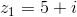 și 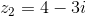.
Rezolvare:
Calculăm 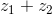.
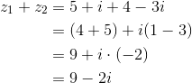
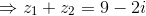.
Calculăm 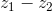.
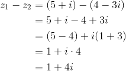
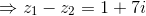.
- Să se determine produsul și câtul numerelor complexe 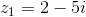 și 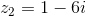.
Rezolvare:
Calculăm 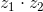.
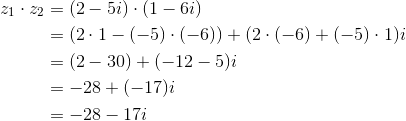
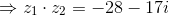.
Calculăm  .
.
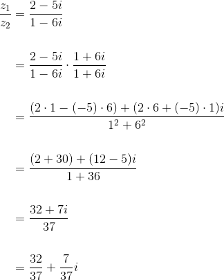
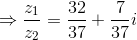.
- Să se calculeze 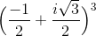.
Rezolvare:
![\begin{align*} &\Big(-\displaystyle\frac{1}{2}+\displaystyle\frac{i\sqrt{3}}{2}\Big)^3=\\ \\&=\Big( -\displaystyle\frac{1}{2}\Big)^3+3\cdot \Big(-\displaystyle\frac{1}{2}\Big)^2 \cdot \Big( \displaystyle\frac{i\sqrt{3}}{2}\Big)+3\cdot \Big( -\displaystyle\frac{1}{2}\Big)\cdot \Big( \displaystyle\frac{i\sqrt{3}}{2}\Big)^2+\Big( \displaystyle\frac{i\sqrt{3}}{2}\Big)^3 \\\\ &=\displaystyle\frac{(-1)^3}{2^3}+\displaystyle\frac{3\cdot (-1)^2i\sqrt{3}}{2^2\cdot 2}+ \displaystyle\frac{3\cdot (-1)\cdot(i\sqrt{3})^2}{2\cdot 2^2} +\displaystyle\frac{(i\sqrt{3})^3}{2^3} \\\\ &= -\displaystyle\frac{1}{8}+\displaystyle\frac{3i\sqrt{3}}{8}+\displaystyle\frac{3\cdot (-1)\cdot i^2\sqrt{3}^2}{8}+\displaystyle\frac{-3i\sqrt{3}}{8} \\ \\&= \displaystyle\frac{-1+3i\sqrt{3}+(-3\cdot (-1)\cdot 3)+(-3i\sqrt{3})}{8} \\ \\&=\displaystyle\frac{-1+3i\sqrt{3}+9 -3i\sqrt{3} }{8} \\ \\&= \displaystyle\frac{-1+9}{8} \\ \\&= \displaystyle\frac{8}{8} \\ \\&=1 \end{align*}](../media/webbooks/351/2489/images/equations/3i6gjrerx0bbbsndlvvmzg==.gif)
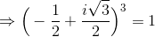.
S-a folosit formula de calcul prescurtat:
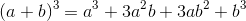,
pentru 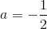 și 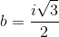.
- Să se verifice dacă are loc egalitatea următoare:
 .
.
Rezolvare:
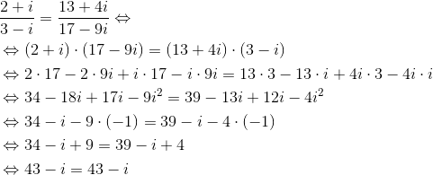
Rezultă cu egalitatea de mai sus este adevărată și deci cele două rapoarte de numere complexe sunt egale.
- Să se calculeze:
- 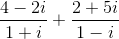;
- 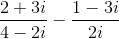.
Rezolvare:
- Calculăm .
![\begin{align*} &\displaystyle\frac{4-2i}{1+i}-\displaystyle\frac{2+5i}{1-i} =\\\\&=\displaystyle\frac{(4-2i)(1-i)-(2+5i)(1+i)}{(1+i)(1-i)} \\\\&= \displaystyle\frac{4\cdot 1+4\cdot (-i)-2i\cdot 1-2i\cdot (-i)-(2\cdot 1+2\cdot i+5i\cdot 1+5i\cdot i)}{1^2-i^2}\\ \\&= \displaystyle\frac{4-4i-2i+2i^2-(2+2i+5i+5i^2)}{1-(-1)} \\\\ &= \displaystyle\frac{4-6i+2\cdot(-1)-2-2i-5i-(5\cdot(-1))}{1+1} \\ \\&=\displaystyle\frac{4-6i-2-2-7i-(-5)}{2} \\\\ &=\displaystyle\frac{-13i+5}{2}\\ \\&=\frac{5}{2}-\frac{13}{2}i \end{align*}](../media/webbooks/351/2489/images/equations/bfnjjz1jc9bt2uds2drbuw==.gif)
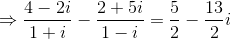.
- Calculăm .
![\begin{align*} &\displaystyle\frac{2+3i}{4-2i}-\displaystyle\frac{1-3i}{2i}=\\\\ &= \displaystyle\frac{2i(2+3i)-(4-2i)(1-3i)}{2i(4-2i)} \\ \\&= \displaystyle\frac{2\cdot 2i +2i\cdot 3i-(4\cdot 1-4\cdot 3i -2i\cdot 1 -2i\cdot (-3i))}{2i\cdot 4 -2i\cdot 2i} \\\\ &= \displaystyle\frac{4i+6i^2-4+12i+2i-6i^2}{8i-4i^2} \\\\ &= \displaystyle\frac{18i-4}{8i+4} \\ \\&=\displaystyle\frac{(-4+18i)(1-2i)}{4(1+2i)(1-2i)} \\\\ &= \displaystyle\frac{-4\cdot 1-4\cdot(-2i)+18i\cdot 1+18i\cdot (-2i) }{4(1^2-2i\cdot 2i)} \\ \\&= \displaystyle\frac{-4+8i+18i -36i^2}{4\cdot (1-4\cdot (-1))} \\ \\&= \displaystyle\frac{-4+26i-36 \cdot (-1)}{4\cdot (1+4)} \\ \\&= \displaystyle\frac{-4+26i+36 }{4\cdot 5} \\ \\&= \displaystyle\frac{32+26i}{20} \\ \\&= \displaystyle\frac{32}{20}+\displaystyle\frac{26}{20} i \\ \\ &= \displaystyle\frac{8}{5} +\displaystyle\frac{13}{10} i \end{align*}](../media/webbooks/351/2489/images/equations/t0sytrmkjqionoxmag854g==.gif)
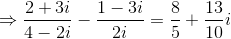.
- Această problemă a fost dată în sesiunea iunie-iulie a anului 2014, pentru profilul științele naturii, la subiectul I, exercițiul 1.
Bacalaureat Matematică 2014 | Științele naturii | Sesiunea iunie-iulie | Subiectul I
Determinați partea reală a numărului complex 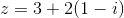.
Rezolvare:
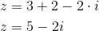
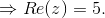
- Această problemă a fost dată în sesiunea iunie-iulie a anului 2013, pentru profilul matematică-informatică, la subiectul I, exercițiul 1.
Bacalaureat Matematică 2013 | Mate - Info | Sesiunea iunie-iulie | Subiectul I
Arătați că numărul 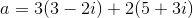 este real.
Rezolvare:
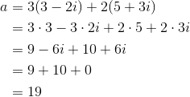
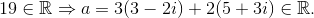
- Această problemă a fost dată în sesiunea specială a anului 2015, pentru profilul matematică-informatică, la subiectul I, exercițiul 1.
Bacalaureat Matematică 2015 | Mate-info | Sesiunea specială | Subiectul I
Se consideră numerele complexe 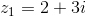 și 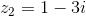. Arătați că numărul este real.
Rezolvare:
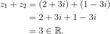
- Această problemă a fost dată în sesiunea august-septembrie a anului 2013, pentru profilul științele naturii, la subiectul I, exercițiul 1.
Bacalaureat Matematică 2013 | Științele naturii | Sesiunea august-septembrie | Subiectul I
Arătați că numărul 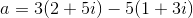 este real.
Rezolvare:
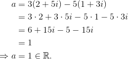
Dacă vrei să vezi mai multe exemple de exerciții cu numere complexe rezolvate, accesează eBook-urile următoare (Subiectul I, exercițiul 1):
Bacalaureat Matematică 2012 | Mate - Info | Sesiunea iunie - iulie | Subiectul I
Bacalaureat Matematică 2014 | Mate - Info | Sesiunea specială | Subiectul I
Bacalaureat Matematică 2014 | Mate-Info | Sesiunea august-septembrie | Subiectul I
Bacalaureat Matematică 2013 | Științele naturii | Sesiunea iunie-iulie | Subiectul I
Bacalaureat Matematică 2014 | Științele naturii | Sesiunea specială | Subiectul I